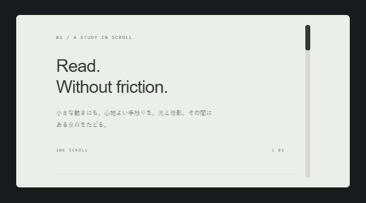

STATE OF PLAY · 似すぎているパーツの調査
2026年10月6日 · ソース HEAD 84472086。37カテゴリのうちLiquid Glass 70件を除き、817件すべての通常表示を比較しました。類似候補と、開いた状態が重要なカテゴリは操作後も確認しています。パーツは削除していません。
判断基準は形・情報構成・操作時の変化・アニメーション。色や弱い角丸だけの差を優先して拾っています。優先度「高」は統合を勧める候補、「中」は素材・用途の差を残す方針なら保留できる候補です。「残す」は今回の整理方針に沿ったデザイン上の提案です。
Aの表現とBの落ち着いた表現を両方残す価値はあります。A/Bをまたぐローダーの集約は、同じ動きの色・背景展開を1つの系列として扱う方針を前提にしています。写真は実装のブラウザ表示で、静止画では動きの違いを表せないためソースと操作記録も参照しています。
調査 817件類似 61組 / 153件削除候補 92件高 67件 / 中 25件
- 似ているところ
- 三重の同心円、円周上の点、中央の脈動が同じ。
- 異なるところ
- Auroraは青緑、Velvetは紫の外枠、Essentialは控えめな配色。
- 削除の提案
- Velvet Loader、Essential Loader。形と回転・脈動の仕組みが重複。背景や色は残す代表の設定で扱える。
ソース・確認記録
src/parts/loaders/aurora-loader / hover / アニメーション 16要素src/parts/loaders/velvet-loader / hover / アニメーション 16要素src/parts/loaders/essential-loader / hover / アニメーション 16要素
操作・アニメーション記録- 似ているところ
- 12本の縦棒を時間差で伸縮させる同じローダー。
- 異なるところ
- Mercuryは金属色、Obsidianは暗色、Softは白い外枠。
- 削除の提案
- Obsidian Loader、Soft Loader。色と外枠を除くと同じ波形。同じ棒型を3件残す必要性が低い。
ソース・確認記録
src/parts/loaders/mercury-loader / hover / アニメーション 16要素src/parts/loaders/obsidian-loader / hover / アニメーション 16要素src/parts/loaders/soft-loader / hover / アニメーション 16要素
操作・アニメーション記録- 似ているところ
- 3枚の細い板がずれて揺れる振り子型。
- 異なるところ
- Folioは紙の背景、Tideは青い面、Outlineは背景を省く。
- 削除の提案
- Folio Loader、Tide Loader。同じ揺れを素材色で増やした系列。背景を要求しないOutlineを代表にする。
ソース・確認記録
src/parts/loaders/folio-loader / hover / アニメーション 16要素src/parts/loaders/tide-loader / hover / アニメーション 16要素src/parts/loaders/outline-loader / hover / アニメーション 16要素
操作・アニメーション記録- 似ているところ
- 破線の三重円と中心の点が回転する構成。
- 異なるところ
- Blueprintは青い外枠、Apertureは灰色、Insetは青灰色。
- 削除の提案
- Blueprint Loader、Aperture Loader。名称から期待される製図・開口の違いが、現在の形と回転にはほぼ出ていない。
ソース・確認記録
src/parts/loaders/blueprint-loader / hover / アニメーション 16要素src/parts/loaders/aperture-loader / hover / アニメーション 16要素src/parts/loaders/inset-loader / hover / アニメーション 16要素
操作・アニメーション記録- 似ているところ
- 立体的な中空六角形を回す構成。
- 異なるところ
- 紫・茶・灰の配色と外枠、わずかな大きさが違う。
- 削除の提案
- Transit Loader、Compact Loader。プリズムの代表1件へ集約し、色違いだけのTransit/Compactを外す。
ソース・確認記録
src/parts/loaders/prism-loader / hover / アニメーション 16要素src/parts/loaders/transit-loader / hover / アニメーション 16要素src/parts/loaders/compact-loader / hover / アニメーション 16要素
操作・アニメーション記録- 似ているところ
- 8分割された円環の同じ回転。
- 異なるところ
- 銅色・緑・青灰色。
- 削除の提案
- Relay Loader、Slate Loader。円環の分割数と回転方式が同じ。Copperの素材色が最も名前と対応する。
ソース・確認記録
src/parts/loaders/copper-loader / hover / アニメーション 16要素src/parts/loaders/relay-loader / hover / アニメーション 16要素src/parts/loaders/slate-loader / hover / アニメーション 16要素
操作・アニメーション記録- 似ているところ
- 2本の糸と球を左右へ振る構成。
- 異なるところ
- 球の色と糸の色が違う。
- 削除の提案
- Botanical Loader、Contour Loader。植物や等高線という独自表現になっておらず、Monoが素直な代表になる。
ソース・確認記録
src/parts/loaders/botanical-loader / hover / アニメーション 16要素src/parts/loaders/contour-loader / hover / アニメーション 16要素src/parts/loaders/mono-loader / hover / アニメーション 16要素
操作・アニメーション記録- 似ているところ
- 見出し・本文・区切り線・右下ボタンを置く同じ角丸カード。
- 異なるところ
- Paperは暖かい白、Accentは青白い面と青い境界。
- 削除の提案
- Accent Card。情報構成・反応は同じで、Accentの独立した形の違いが弱い。
ソース・確認記録
src/parts/blocks/paper-card / hover / アニメーション 0要素src/parts/blocks/accent-card / hover / アニメーション 0要素
操作・アニメーション記録- 似ているところ
- 同じ3行チェックリストと下部の完了表示。
- 異なるところ
- Statusは青緑の塗り面と上辺のアクセント、Outlineは薄い輪郭。
- 削除の提案
- Status Card。状態表示を色以外で作り分けていないため、輪郭版を代表にする。
ソース・確認記録
src/parts/blocks/outline-card / hover / アニメーション 0要素src/parts/blocks/status-card / hover / アニメーション 0要素
操作・アニメーション記録- 似ているところ
- 細い直線レールと角丸の明るいつまみ。
- 異なるところ
- Frostは青い反射と軽い影、Minimalは単純な明色。
- 削除の提案
- Frost Scroll。スクロール時も同じ移動。Frostの差は小さな光沢に留まる。
ソース・確認記録
src/parts/scrollbars/minimal-scroll / scroll / アニメーション 0要素src/parts/scrollbars/frost-scroll / scroll / アニメーション 0要素
操作・アニメーション記録Ink Scroll残す推奨ink-scroll · B · 通常表示
操作後：scrollAccent Scroll削除候補accent-scroll · B · 通常表示操作後：scrollEditorial Scroll削除候補editorial-scroll · B · 通常表示操作後：scroll - 似ているところ
- 白い背景の細い直線レールと単色のつまみ。
- 異なるところ
- 黒・青・茶のつまみと背景の色温度が違う。
- 削除の提案
- Accent Scroll、Editorial Scroll。形とスクロールの反応が同じ。配色を独立パーツ数に数えない方針なら集約できる。
ソース・確認記録
src/parts/scrollbars/ink-scroll / scroll / アニメーション 0要素src/parts/scrollbars/accent-scroll / scroll / アニメーション 0要素src/parts/scrollbars/editorial-scroll / scroll / アニメーション 0要素
操作・アニメーション記録Quiet Button残す推奨quiet-button · B · 通常表示操作後：hoverSoft Button削除候補soft-button · B · 通常表示操作後：hoverLinen Button削除候補linen-button · B · 通常表示操作後：hover - 似ているところ
- 短い文字と右側の小アイコンを置く、塗り面の小ボタン。
- 異なるところ
- 色、角丸、Linenの弱い影と字体が違う。
- 削除の提案
- Soft Button、Linen Button。押下の構造と用途が重なる。Quietを基準に色・字体の設定として扱う。
ソース・確認記録
src/parts/buttons/quiet-button / hover / アニメーション 0要素src/parts/buttons/soft-button / hover / アニメーション 0要素src/parts/buttons/linen-button / hover / アニメーション 0要素
操作・アニメーション記録Text Arrow Link残す推奨text-arrow-link · B · 通常表示操作後：hoverSubtle Link削除候補subtle-link · B · 通常表示操作後：hover - 似ているところ
- 文字の右に矢印を置き、ホバーで右へずらすリンク。
- 異なるところ
- 色、矢印の大きさ、初期の不透明度が違う。
- 削除の提案
- Subtle Link。同じ構成とホバー。Text Arrowの分かりやすい表示を残す。
ソース・確認記録
src/parts/links/text-arrow-link / hover / アニメーション 0要素src/parts/links/subtle-link / hover / アニメーション 0要素
操作・アニメーション記録Atlas Tabs削除候補atlas-tabs · A · 通常表示操作後：select-secondFolio Tabs残す推奨folio-tabs · A · 通常表示操作後：select-second - 似ているところ
- 紙色の3タブ、折れた選択片、紙の層を持つ本文。
- 異なるところ
- ラベル、端の切り欠き、個別CSSの設定値に差がある。
- 削除の提案
- Atlas Tabs。実表示の共通paper/map演出が強く、地図と綴じ本の違いが弱い。紙という名前が明確なFolioを残す。
ソース・確認記録
src/parts/tabs/atlas-tabs / select-second / アニメーション 0要素src/parts/tabs/folio-tabs / select-second / アニメーション 0要素
操作・アニメーション記録Essential Tabs残す推奨essential-tabs · B · 通常表示操作後：select-secondPill Tabs削除候補pill-tabs · B · 通常表示操作後：select-second - 似ているところ
- 角丸レール上を選択面が滑り、同じ構成の本文を切り替える。
- 異なるところ
- 本文面の色と角丸の程度が違う。
- 削除の提案
- Pill Tabs。Pillという名前ほど選択部の輪郭が違わず、独立した用途も重なる。
ソース・確認記録
src/parts/tabs/essential-tabs / select-second / アニメーション 3要素src/parts/tabs/pill-tabs / select-second / アニメーション 3要素
操作・アニメーション記録Origami Selector残す推奨origami-segments · A · 通常表示操作後：select-firstAtlas Selector削除候補atlas-segments · A · 通常表示操作後：select-first - 似ているところ
- 紙色の横並び3択と、角の折れた選択面。
- 異なるところ
- 初期の文字と、個別CSSで指定する切り欠きが違う。
- 削除の提案
- Atlas Selector。実表示では同じ紙の折れと移動が中心。折り紙という表現を明示するOrigamiを残す。
ソース・確認記録
src/parts/segments/origami-segments / select-first / アニメーション 0要素src/parts/segments/atlas-segments / select-first / アニメーション 0要素
操作・アニメーション記録Detent Selector削除候補detent-segments · A · 通常表示操作後：select-firstStudio Selector残す推奨studio-segments · A · 通常表示操作後：select-first - 似ているところ
- 暗いレールと分割された金属の選択面。
- 異なるところ
- Detentは少数の太い縦面、Studioは細い縦面が多い。
- 削除の提案
- Detent Selector。同じ板の回転と移動。刻みの密度だけでは2件分の個性が弱い。
ソース・確認記録
src/parts/segments/detent-segments / select-first / アニメーション 0要素src/parts/segments/studio-segments / select-first / アニメーション 0要素
操作・アニメーション記録Essential Segments残す推奨essential-segments · B · 通常表示操作後：select-firstSoft Segments削除候補soft-segments · B · 通常表示操作後：select-firstPaper Segments削除候補paper-segments · B · 通常表示操作後：select-first - 似ているところ
- 暗い角丸レールと緑の選択面が同じ3択。
- 異なるところ
- 初期ラベル、余白と角丸の微差。Paperも現行表示は紙色にならない。
- 削除の提案
- Soft Segments、Paper Segments。見た目と切り替えが非常に近い。想定CSSではなく現行実表示を基準に集約する。
ソース・確認記録
src/parts/segments/essential-segments / select-first / アニメーション 0要素src/parts/segments/soft-segments / select-first / アニメーション 0要素src/parts/segments/paper-segments / select-first / アニメーション 0要素
操作・アニメーション記録Compact Segments残す推奨compact-segments · B · 通常表示操作後：select-firstSlate Segments削除候補slate-segments · B · 通常表示操作後：select-firstIcon Segments削除候補icon-segments · B · 通常表示操作後：select-first - 似ているところ
- アイコン付きの暗い3択レール。
- 異なるところ
- Iconは輪郭・点、ラベルと細かな余白が違う。
- 削除の提案
- Slate Segments、Icon Segments。同じ配置と選択面の移動。アイコン対応をCompactのオプションとして残せる。
ソース・確認記録
src/parts/segments/compact-segments / select-first / アニメーション 0要素src/parts/segments/slate-segments / select-first / アニメーション 0要素src/parts/segments/icon-segments / select-first / アニメーション 0要素
操作・アニメーション記録Essential Check残す推奨essential-check · B · 通常表示操作後：selectConsent Check削除候補consent-check · B · 通常表示操作後：selectAccent Check削除候補accent-check · B · 通常表示操作後：select - 似ているところ
- 四角いチェックと2行の説明を同じ角丸の帯に配置。
- 異なるところ
- 文言、配色、選択済み状態が違う。
- 削除の提案
- Consent Check、Accent Check。同じチェック操作と形。Consent/Accentの違いは接続先や配色で表せる。
ソース・確認記録
src/parts/checkboxes/essential-check / select / アニメーション 0要素src/parts/checkboxes/consent-check / select / アニメーション 0要素src/parts/checkboxes/accent-check / select / アニメーション 0要素
操作・アニメーション記録Essential Dialog残す推奨essential-dialog · B · 展開後通常表示Quiet Confirm削除候補quiet-confirm · B · 展開後通常表示 - 似ているところ
- 閉じるボタン・見出し・説明・確認内容・下部操作の確認ダイアログ。
- 異なるところ
- 初期内容と面の色が違う。
- 削除の提案
- Quiet Confirm。確認対象を変えたデモに近く、Quiet専用のレイアウトが弱い。
ソース・確認記録
src/parts/popups/essential-dialog / open / アニメーション 1要素src/parts/popups/quiet-confirm / open / アニメーション 1要素
操作・アニメーション記録Paper Dialog削除候補paper-dialog · B · 展開後通常表示Form Dialog残す推奨form-dialog · B · 展開後通常表示 - 似ているところ
- 白い編集ダイアログに入力欄と下部の操作を配置。
- 異なるところ
- 項目数、余白、見出しの字体と初期ラベルが違う。
- 削除の提案
- Paper Dialog。名前変更とプロフィール編集は本体に渡す内容の違い。Formが汎用的な代表。
ソース・確認記録
src/parts/popups/paper-dialog / open / アニメーション 1要素src/parts/popups/form-dialog / open / アニメーション 1要素
操作・アニメーション記録Essential Range残す推奨essential-range · B · 通常表示操作後：hoverInset Range削除候補inset-range · B · 通常表示操作後：hoverSlate Range削除候補slate-range · B · 通常表示操作後：hover - 似ているところ
- 値・一本の線・丸いつまみの単値スライダー。
- 異なるところ
- 青灰色の色調と輪郭の微差。
- 削除の提案
- Inset Range、Slate Range。値の操作とレールの構造が同じ。Inset/Slateの固有機構がない。
ソース・確認記録
src/parts/sliders/essential-range / hover / アニメーション 0要素src/parts/sliders/inset-range / hover / アニメーション 0要素src/parts/sliders/slate-range / hover / アニメーション 0要素
操作・アニメーション記録Soft Range残す推奨soft-range · B · 通常表示操作後：hoverPaper Range削除候補paper-range · B · 通常表示操作後：hover - 似ているところ
- 明るい外枠の中に同じ単値スライダー。
- 異なるところ
- 緑白と生成り、角丸と字体。
- 削除の提案
- Paper Range。明色の基本形は1件にまとめ、紙色はテーマ設定として残せる。
ソース・確認記録
src/parts/sliders/soft-range / hover / アニメーション 0要素src/parts/sliders/paper-range / hover / アニメーション 0要素
操作・アニメーション記録Outline Range残す推奨outline-range · B · 通常表示操作後：hoverMono Range削除候補mono-range · B · 通常表示操作後：hover - 似ているところ
- 2つの丸いつまみで範囲を指定する細いレール。
- 異なるところ
- 初期値と配色が違う。
- 削除の提案
- Mono Range。共通APIで範囲値を設定でき、形も操作もほぼ同じ。
ソース・確認記録
src/parts/sliders/outline-range / hover / アニメーション 0要素src/parts/sliders/mono-range / hover / アニメーション 0要素
操作・アニメーション記録Essential Choice残す推奨essential-choice · B · 通常表示操作後：selectSlate Choice削除候補slate-choice · B · 通常表示操作後：selectMono Choice削除候補mono-choice · B · 通常表示操作後：select - 似ているところ
- 3枚の選択カード、右端の丸い指標と選択枠。
- 異なるところ
- 青灰色・茶色の配色、角丸の微差。
- 削除の提案
- Slate Choice、Mono Choice。同じレイアウトと選択操作。色違いの独立登録を減らす。
ソース・確認記録
src/parts/radios/essential-choice / select / アニメーション 0要素src/parts/radios/slate-choice / select / アニメーション 0要素src/parts/radios/mono-choice / select / アニメーション 0要素
操作・アニメーション記録Soft Choice残す推奨soft-choice · B · 通常表示操作後：selectPaper Choice削除候補paper-choice · B · 通常表示操作後：select - 似ているところ
- 明るい外枠と3枚の選択カード。
- 異なるところ
- 生成りの色と字体、角丸。
- 削除の提案
- Paper Choice。構成も選択の見せ方も同じ。Softを明色の代表にする。
ソース・確認記録
src/parts/radios/soft-choice / select / アニメーション 0要素src/parts/radios/paper-choice / select / アニメーション 0要素
操作・アニメーション記録Essential Finder残す推奨essential-finder · B · 展開後通常表示Compact Finder削除候補compact-finder · B · 展開後通常表示Mono Finder削除候補mono-finder · B · 展開後通常表示 - 似ているところ
- 左の検索記号、入力、右の展開ボタンを持つ横長フィールド。
- 異なるところ
- 配色と小さな角丸・文字サイズ。
- 削除の提案
- Compact Finder、Mono Finder。候補一覧も同じ構成。Compactは独立したコンパクトレイアウトの差が弱い。
ソース・確認記録
src/parts/comboboxes/essential-finder / open-options / アニメーション 1要素src/parts/comboboxes/compact-finder / open-options / アニメーション 1要素src/parts/comboboxes/mono-finder / open-options / アニメーション 1要素
操作・アニメーション記録Soft Finder残す推奨soft-finder · B · 展開後通常表示Paper Finder削除候補paper-finder · B · 展開後通常表示 - 似ているところ
- 明るい外枠と同じ検索・候補欄。
- 異なるところ
- 生成りの色と字体、角丸。
- 削除の提案
- Paper Finder。入力と候補表示が重なり、Paperの差はテーマ相当。
ソース・確認記録
src/parts/comboboxes/soft-finder / open-options / アニメーション 1要素src/parts/comboboxes/paper-finder / open-options / アニメーション 1要素
操作・アニメーション記録Inset Finder削除候補inset-finder · B · 展開後通常表示Slate Finder残す推奨slate-finder · B · 展開後通常表示 - 似ているところ
- 青いフィールドに検索と展開操作を置く。
- 異なるところ
- Insetは角ばった枠、Slateは少し丸い塗り面。
- 削除の提案
- Inset Finder。展開後も構成は同じ。Insetの沈み込みが独立した特徴になりにくい。
ソース・確認記録
src/parts/comboboxes/inset-finder / open-options / アニメーション 1要素src/parts/comboboxes/slate-finder / open-options / アニメーション 1要素
操作・アニメーション記録Essential Notice残す推奨essential-notice · B · 通常表示操作後：hoverInset Notice削除候補inset-notice · B · 通常表示操作後：hoverCompact Notice削除候補compact-notice · B · 通常表示操作後：hoverSlate Notice削除候補slate-notice · B · 通常表示操作後：hoverMono Notice削除候補mono-notice · B · 通常表示操作後：hover - 似ているところ
- 同じ説明記号、2行の文章、下端の時間表示を持つ通知。
- 異なるところ
- 色、角丸、数pxの文字・余白の差。
- 削除の提案
- Inset Notice、Compact Notice、Slate Notice、Mono Notice。表示・退出・操作の構造が同じで、5件分の選択肢としては過密。
ソース・確認記録
src/parts/toasts/essential-notice / hover / アニメーション 1要素src/parts/toasts/inset-notice / hover / アニメーション 1要素src/parts/toasts/compact-notice / hover / アニメーション 1要素src/parts/toasts/slate-notice / hover / アニメーション 1要素src/parts/toasts/mono-notice / hover / アニメーション 1要素
操作・アニメーション記録Soft Notice残す推奨soft-notice · B · 通常表示操作後：hoverPaper Notice削除候補paper-notice · B · 通常表示操作後：hover - 似ているところ
- 明るい外枠に同じ通知と表示ボタン。
- 異なるところ
- 生成りと緑白、角丸と字体。
- 削除の提案
- Paper Notice。同じ通知をテーマ変更した系列としてまとめられる。
ソース・確認記録
src/parts/toasts/soft-notice / hover / アニメーション 1要素src/parts/toasts/paper-notice / hover / アニメーション 1要素
操作・アニメーション記録Essential Popover残す推奨essential-popover · B · 展開後通常表示Inset Popover削除候補inset-popover · B · 展開後通常表示Slate Popover削除候補slate-popover · B · 展開後通常表示Mono Popover削除候補mono-popover · B · 展開後通常表示 - 似ているところ
- 同じ小さなトリガーと説明パネル。
- 異なるところ
- トリガー・面の配色と角丸。
- 削除の提案
- Inset Popover、Slate Popover、Mono Popover。説明表示の構造が重なる。透明なOutlineや密度を変えるCompactは別途残す。
ソース・確認記録
src/parts/hints/essential-popover / open / hover-trigger / アニメーション 1要素src/parts/hints/inset-popover / open / hover-trigger / アニメーション 1要素src/parts/hints/slate-popover / open / hover-trigger / アニメーション 1要素src/parts/hints/mono-popover / open / hover-trigger / アニメーション 1要素
操作・アニメーション記録Essential Progress残す推奨essential-progress · B · 通常表示操作後：hoverInset Progress削除候補inset-progress · B · 通常表示操作後：hoverSlate Progress削除候補slate-progress · B · 通常表示操作後：hoverMono Progress削除候補mono-progress · B · 通常表示操作後：hover - 似ているところ
- 横棒と数値を持つ進捗表示。
- 異なるところ
- 色と外枠の角丸、細い輪郭。
- 削除の提案
- Inset Progress、Slate Progress、Mono Progress。進捗を更新したときの構造が同じ。円形のOutlineは別の表現なので残す。
ソース・確認記録
src/parts/progress/essential-progress / hover / アニメーション 0要素src/parts/progress/inset-progress / hover / アニメーション 0要素src/parts/progress/slate-progress / hover / アニメーション 0要素src/parts/progress/mono-progress / hover / アニメーション 0要素
操作・アニメーション記録Soft Progress残す推奨soft-progress · B · 通常表示操作後：hoverPaper Progress削除候補paper-progress · B · 通常表示操作後：hover - 似ているところ
- 明るい外枠の横棒・数値表示。
- 異なるところ
- 生成りの色と字体、角丸。
- 削除の提案
- Paper Progress。同じ進捗表示の明色版を1件に集約できる。
ソース・確認記録
src/parts/progress/soft-progress / hover / アニメーション 0要素src/parts/progress/paper-progress / hover / アニメーション 0要素
操作・アニメーション記録Essential Dropzone残す推奨essential-dropzone · B · 通常表示操作後：hoverInset Dropzone削除候補inset-dropzone · B · 通常表示操作後：hoverCompact Dropzone削除候補compact-dropzone · B · 通常表示操作後：hoverSlate Dropzone削除候補slate-dropzone · B · 通常表示操作後：hover - 似ているところ
- 点線のドロップ領域、説明、右端の選択ボタン。
- 異なるところ
- 色、角丸、微細な余白。
- 削除の提案
- Inset Dropzone、Compact Dropzone、Slate Dropzone。ファイル選択後も同じ一覧。独自の投入機構や配置の違いがない。
ソース・確認記録
src/parts/uploads/essential-dropzone / hover / アニメーション 0要素src/parts/uploads/inset-dropzone / hover / アニメーション 0要素src/parts/uploads/compact-dropzone / hover / アニメーション 0要素src/parts/uploads/slate-dropzone / hover / アニメーション 0要素
操作・アニメーション記録Soft Dropzone残す推奨soft-dropzone · B · 通常表示操作後：hoverPaper Dropzone削除候補paper-dropzone · B · 通常表示操作後：hover - 似ているところ
- 明るい外枠と同じ点線の投入領域。
- 異なるところ
- 生成りの色、角丸、字体。
- 削除の提案
- Paper Dropzone。同じ投入・選択処理と配置で、テーマ差の域。
ソース・確認記録
src/parts/uploads/soft-dropzone / hover / アニメーション 0要素src/parts/uploads/paper-dropzone / hover / アニメーション 0要素
操作・アニメーション記録Essential Calendar残す推奨essential-calendar · B · 展開後通常表示Outline Calendar削除候補outline-calendar · B · 展開後通常表示Compact Calendar削除候補compact-calendar · B · 展開後通常表示 - 似ているところ
- 日付欄と右のカレンダーボタン。
- 異なるところ
- 角丸、境界と配色、初期の値。
- 削除の提案
- Outline Calendar、Compact Calendar。単日カレンダーを開いた後も構成が近く、3件の差が弱い。期間・日時・時刻の代表は残す。
ソース・確認記録
src/parts/datepickers/essential-calendar / open / アニメーション 1要素src/parts/datepickers/outline-calendar / open / アニメーション 1要素src/parts/datepickers/compact-calendar / open / アニメーション 1要素
操作・アニメーション記録Soft Pages残す推奨soft-pages · B · 通常表示操作後：hoverPaper Pages削除候補paper-pages · B · 通常表示操作後：hover - 似ているところ
- 明るい外枠、番号列、現在ページの数値。
- 異なるところ
- 色温度・角丸・字体。
- 削除の提案
- Paper Pages。同じページ送りと同じ移動面。明色の代表にまとめる。
ソース・確認記録
src/parts/pagination/soft-pages / hover / アニメーション 0要素src/parts/pagination/paper-pages / hover / アニメーション 0要素
操作・アニメーション記録Outline Pages残す推奨outline-pages · B · 通常表示操作後：hoverInset Pages削除候補inset-pages · B · 通常表示操作後：hoverCompact Pages削除候補compact-pages · B · 通常表示操作後：hover - 似ているところ
- 暗い横長の番号列と、その下の現在ページ表示。
- 異なるところ
- 枠内の塗り色、微細なサイズと字体。
- 削除の提案
- Inset Pages、Compact Pages。番号配置とページ変更が同じ。塗り面を抑えたOutlineを残す。
ソース・確認記録
src/parts/pagination/outline-pages / hover / アニメーション 0要素src/parts/pagination/inset-pages / hover / アニメーション 0要素src/parts/pagination/compact-pages / hover / アニメーション 0要素
操作・アニメーション記録Essential Trail残す推奨essential-trail · B · 通常表示操作後：hoverOutline Trail削除候補outline-trail · B · 通常表示操作後：hoverInset Trail削除候補inset-trail · B · 通常表示操作後：hoverCompact Trail削除候補compact-trail · B · 通常表示操作後：hover - 似ているところ
- Home・省略・階層・現在地を横一列に置くパンくず。
- 異なるところ
- 色、角丸、微細な枠と文字サイズ。
- 削除の提案
- Outline Trail、Inset Trail、Compact Trail。同じ経路と省略メニューを表示する。種類を分けるほどの配置差が弱い。
ソース・確認記録
src/parts/breadcrumbs/essential-trail / hover / アニメーション 1要素src/parts/breadcrumbs/outline-trail / hover / アニメーション 1要素src/parts/breadcrumbs/inset-trail / hover / アニメーション 1要素src/parts/breadcrumbs/compact-trail / hover / アニメーション 1要素
操作・アニメーション記録Soft Trail残す推奨soft-trail · B · 通常表示操作後：hoverPaper Trail削除候補paper-trail · B · 通常表示操作後：hover - 似ているところ
- 明るい外枠の同じ横並びパンくず。
- 異なるところ
- 色温度・角丸・字体。
- 削除の提案
- Paper Trail。明色テーマ違いとしてまとめられる。
ソース・確認記録
src/parts/breadcrumbs/soft-trail / hover / アニメーション 1要素src/parts/breadcrumbs/paper-trail / hover / アニメーション 1要素
操作・アニメーション記録Essential Tags残す推奨essential-tags · B · 通常表示操作後：hoverInset Tags削除候補inset-tags · B · 通常表示操作後：hoverSlate Tags削除候補slate-tags · B · 通常表示操作後：hoverMono Tags削除候補mono-tags · B · 通常表示操作後：hover - 似ているところ
- 小さな長方形チップを並べ、選択面を反転する。
- 異なるところ
- 配色と角丸。初期の表示専用・選択設定も違う。
- 削除の提案
- Inset Tags、Slate Tags、Mono Tags。表示専用・選択・削除は共通オプションで変更可能。独立パーツの差は小さい。
ソース・確認記録
src/parts/badges/essential-tags / hover / アニメーション 0要素src/parts/badges/inset-tags / hover / アニメーション 0要素src/parts/badges/slate-tags / hover / アニメーション 0要素src/parts/badges/mono-tags / hover / アニメーション 0要素
操作・アニメーション記録Essential Stepper残す推奨essential-stepper · B · 通常表示操作後：hoverInset Stepper削除候補inset-stepper · B · 通常表示操作後：hoverCompact Stepper削除候補compact-stepper · B · 通常表示操作後：hover - 似ているところ
- 左に減算、中央に直接入力、右に加算。
- 異なるところ
- 色と数pxの字体・境界の差。
- 削除の提案
- Inset Stepper、Compact Stepper。同じ数値編集の構造。独立した調整機構や配置差がない。
ソース・確認記録
src/parts/numbers/essential-stepper / hover / アニメーション 0要素src/parts/numbers/inset-stepper / hover / アニメーション 0要素src/parts/numbers/compact-stepper / hover / アニメーション 0要素
操作・アニメーション記録Soft Stepper残す推奨soft-stepper · B · 通常表示操作後：hoverPaper Stepper削除候補paper-stepper · B · 通常表示操作後：hover - 似ているところ
- 明るい外枠の三分割数値入力。
- 異なるところ
- 初期の単位・刻み、色温度・角丸・字体。
- 削除の提案
- Paper Stepper。小数や刻みは共通APIの設定で変更できる。明色版を代表1件にする。
ソース・確認記録
src/parts/numbers/soft-stepper / hover / アニメーション 0要素src/parts/numbers/paper-stepper / hover / アニメーション 0要素
操作・アニメーション記録Classic Color残す推奨classic-color · B · 通常表示操作後：hoverPaper Color削除候補paper-color · B · 通常表示操作後：hover - 似ているところ
- 矩形の色面、HSV調整、色見本、HEX欄。
- 異なるところ
- 白い外枠と字体、スライダーの色。
- 削除の提案
- Paper Color。色選択の操作と構成が同じ。Paperは明色テーマとして扱える。
ソース・確認記録
src/parts/colors/classic-color / hover / アニメーション 0要素src/parts/colors/paper-color / hover / アニメーション 0要素
操作・アニメーション記録Shimmer Skeleton残す推奨shimmer-skeleton · B · 通常表示操作後：hoverPaper Skeleton削除候補paper-skeleton · B · 通常表示操作後：hover - 似ているところ
- 画像・プロフィール・文章・操作を同じ場所で仮表示する。
- 異なるところ
- 紙色の背景と仮表示面の色。
- 削除の提案
- Paper Skeleton。同じ骨格と読み込み表示。文章・表・プロフィール専用の骨格は残す。
ソース・確認記録
src/parts/skeletons/shimmer-skeleton / hover / アニメーション 1要素src/parts/skeletons/paper-skeleton / hover / アニメーション 1要素
操作・アニメーション記録Basic Timeline残す推奨basic-timeline · B · 通常表示操作後：hoverDotted Timeline削除候補dotted-timeline · B · 通常表示操作後：hover - 似ているところ
- 日付、縦線、点、開閉できる履歴を縦に配置。
- 異なるところ
- 線の点線化とステータス表示の微差。
- 削除の提案
- Dotted Timeline。履歴の配置と開閉は同じ。線種はBasicの設定として扱える。
ソース・確認記録
src/parts/timelines/basic-timeline / hover / アニメーション 1要素src/parts/timelines/dotted-timeline / hover / アニメーション 1要素
操作・アニメーション記録Essential Search残す推奨essential-searchbar · B · 通常表示操作後：hoverFilter Search削除候補filter-searchbar · B · 通常表示操作後：hover - 似ているところ
- 検索欄と送信ボタン、その下に3つのフィルター。
- 異なるところ
- Filterはフィルター上に区切り線を加える。
- 削除の提案
- Filter Search。Essentialにもフィルターがあり、Filter固有の機能・構成差がほぼない。
ソース・確認記録
src/parts/searchbars/essential-searchbar / hover / アニメーション 1要素src/parts/searchbars/filter-searchbar / hover / アニメーション 1要素
操作・アニメーション記録Soft Search Bar残す推奨soft-searchbar · B · 通常表示操作後：hoverPaper Search削除候補paper-searchbar · B · 通常表示操作後：hover - 似ているところ
- 明るい外枠、検索欄、送信、フィルター。
- 異なるところ
- 色温度・角丸・字体。
- 削除の提案
- Paper Search。検索結果の構成も同じ。明色の代表に集約できる。
ソース・確認記録
src/parts/searchbars/soft-searchbar / hover / アニメーション 1要素src/parts/searchbars/paper-searchbar / hover / アニメーション 1要素
操作・アニメーション記録Essential Command残す推奨essential-command · B · 展開後通常表示Simple Command削除候補simple-command · B · 展開後通常表示 - 似ているところ
- コマンド記号・見出し・検索欄を同じ順で配置。
- 異なるところ
- Simpleは枠の角を少し鋭くする。
- 削除の提案
- Simple Command。開いたコマンド一覧も同じ構造。Simpleの独立した用途が弱い。
ソース・確認記録
src/parts/commands/essential-command / open / アニメーション 1要素src/parts/commands/simple-command / open / アニメーション 1要素
操作・アニメーション記録Light Command残す推奨light-command · B · 展開後通常表示Quiet Command削除候補quiet-command · B · 展開後通常表示 - 似ているところ
- 白い外枠と同じコマンド検索・一覧。
- 異なるところ
- Quietは一覧のアイコンを省く。Lightはアイコン付き。外枠の色温度・角丸も違う。
- 削除の提案
- Quiet Command。検索・グループ・候補行の構成は重なる。アイコン省略を独立したデザインとして残す方針なら保留。整理するなら情報の識別がしやすいLightを残す。
ソース・確認記録
src/parts/commands/light-command / open / アニメーション 1要素src/parts/commands/quiet-command / open / アニメーション 1要素
操作・アニメーション記録Essential Menu残す推奨essential-context · B · 展開後通常表示Plain Menu削除候補plain-context · B · 展開後通常表示 - 似ているところ
- ファイル記号・2行の説明・右端のメニューボタン。
- 異なるところ
- Plainはメニューのアイコンを省き、角丸を小さくする。Essentialはアイコン付き。
- 削除の提案
- Plain Menu。同じ操作一覧を簡略化した形。文字だけのメニューに独立した価値を置くなら保留。整理するなら項目の識別がしやすいEssentialを残す。
ソース・確認記録
src/parts/contextmenus/essential-context / open / アニメーション 1要素src/parts/contextmenus/plain-context / open / アニメーション 1要素
操作・アニメーション記録Paper Menu残す推奨paper-context · B · 展開後通常表示Soft Menu削除候補soft-context · B · 展開後通常表示 - 似ているところ
- 明るい面と同じファイル操作メニュー。
- 異なるところ
- 色温度・角丸・記号の背景。
- 削除の提案
- Soft Menu。展開時にも配置が重なる。Paperを明色の基本形にする。
ソース・確認記録
src/parts/contextmenus/paper-context / open / アニメーション 1要素src/parts/contextmenus/soft-context / open / アニメーション 1要素
操作・アニメーション記録Paper Index残す推奨paper-index-nav · A · 通常表示操作後：hoverSpine Navigation削除候補spine-navigation · A · 通常表示操作後：hover - 似ているところ
- 本のような紙色の縦ナビと左の綴じ目。
- 異なるところ
- Spineは角が丸く、本文の字体と背の陰影が違う。
- 削除の提案
- Spine Navigation。選択・展開時も紙の縦索引として重なる。Paper Indexの明確な綴じ目を残す。
ソース・確認記録
src/parts/navigation/paper-index-nav / hover / アニメーション 0要素src/parts/navigation/spine-navigation / hover / アニメーション 0要素
操作・アニメーション記録Zebra Table残す推奨zebra-table · B · 通常表示操作後：hoverPaper Data削除候補paper-data-table · B · 通常表示操作後：hover - 似ているところ
- 明るい表、検索、選択、ソート、交互の行背景。
- 異なるところ
- 白と生成り、見出しの字体と枠の微差。
- 削除の提案
- Paper Data。同じ表構成・操作で、色を変えた表としてまとめられる。
ソース・確認記録
src/parts/tables/zebra-table / hover / アニメーション 0要素src/parts/tables/paper-data-table / hover / アニメーション 0要素
操作・アニメーション記録Folio Table残す推奨folio-table · A · 通常表示操作後：hoverRibbon Ledger削除候補ribbon-ledger · A · 通常表示操作後：hover - 似ているところ
- 紙色の角丸表と左端の綴じ目、同じ行構成。
- 異なるところ
- Ribbonの左端の濃い帯と見出しの字体、Folioの重なりの影。
- 削除の提案
- Ribbon Ledger。表の見せ方が近く、リボンが操作機構になるわけでもない。Folioの紙層を代表にする。
ソース・確認記録
src/parts/tables/folio-table / hover / アニメーション 0要素src/parts/tables/ribbon-ledger / hover / アニメーション 0要素
操作・アニメーション記録Hinge Fan削除候補hinge-fan · A · 通常表示操作後：hoverFan Spark残す推奨fan-spark · A · 通常表示操作後：hover - 似ているところ
- 一点を軸に、金色の細い羽根を扇状に展開する装飾。
- 異なるところ
- Hingeはゆっくり漂う。Fan Sparkはホバーで扇を大きく開く。
- 削除の提案
- Hinge Fan。差はあるが、同じ扇の枠が重なる。Aの操作反応を重視してFan Sparkを残す。
ソース・確認記録
src/parts/ornaments/hinge-fan / hover / アニメーション 6要素src/parts/ornaments/fan-spark / hover / アニメーション 1要素
操作・アニメーション記録Essential Select残す推奨essential-select · B · 展開後通常表示Outline Select削除候補outline-select · B · 展開後通常表示 - 似ているところ
- 明るいメニューに、項目名・説明・右端チェック・上下の区切りを並べる。
- 異なるところ
- Outlineは角を鋭くし、項目ごとの下線を強める。Essentialは角丸と弱い影。
- 削除の提案
- Outline Select。展開後の情報構成と選択動作がほぼ同じ。輪郭の強さを別パーツとして残す価値より、基本形を集約する方針ならOutlineを外す。
ソース・確認記録
src/parts/dropdowns/essential-select / open / アニメーション 1要素src/parts/dropdowns/outline-select / open / アニメーション 1要素
操作・アニメーション記録Soft Select削除候補soft-select · B · 展開後通常表示Team Select残す推奨team-select · B · 展開後通常表示 - 似ているところ
- 丸いイニシャル表示、項目名・説明・右端情報を持つ明るいメニュー。
- 異なるところ
- Softは紫と大きい角丸。Teamは生成りと項目別のイニシャル色。
- 削除の提案
- Soft Select。用途名は違うが、表示構造は同じ。イニシャルの識別が明確なTeamを残し、紫色は配色展開としてまとめる案。
ソース・確認記録
src/parts/dropdowns/soft-select / open / アニメーション 1要素src/parts/dropdowns/team-select / open / アニメーション 1要素
操作・アニメーション記録Slate Select残す推奨slate-select · B · 展開後通常表示Locale Select削除候補locale-select · B · 展開後通常表示 - 似ているところ
- 暗いメニューに、角型の短い記号、項目名・説明・右端情報を置く。
- 異なるところ
- Slateは青灰と四角い記号。Localeは緑黒と横長の言語コード。
- 削除の提案
- Locale Select。専用機能の差より項目データと配色の差が大きい。Localeのコード表示を設定として引き継ぐ前提でSlateへまとめる。
ソース・確認記録
src/parts/dropdowns/slate-select / open / アニメーション 1要素src/parts/dropdowns/locale-select / open / アニメーション 1要素
操作・アニメーション記録全カテゴリの確認範囲
候補0組は、今回の比較で削除を提案するほどの重複を見つけなかったカテゴリです。A/Bリンクから全パーツの写真一覧を確認できます。
| カテゴリ | 調査件数 | 類似組 | 削除候補 | 全写真 |
|---|
| トグル | 24 | 0 | 0 | A / B |
|---|
| カード | 24 | 2 | 2 | A / B |
|---|
| スクロールバー | 36 | 2 | 3 | A / B |
|---|
| ドロップダウン | 36 | 3 | 3 | A / B |
|---|
| アコーディオン | 24 | 0 | 0 | A / B |
|---|
| テキスト入力 | 24 | 0 | 0 | A / B |
|---|
| ボタン | 24 | 1 | 2 | A / B |
|---|
| リンク | 16 | 1 | 1 | A / B |
|---|
| タブ | 24 | 2 | 2 | A / B |
|---|
| セグメント | 24 | 4 | 6 | A / B |
|---|
| チェックボックス | 24 | 1 | 2 | A / B |
|---|
| ダイアログ | 24 | 2 | 2 | A / B |
|---|
| スライダー | 24 | 3 | 4 | A / B |
|---|
| ラジオ | 24 | 2 | 3 | A / B |
|---|
| コンボボックス | 24 | 3 | 4 | A / B |
|---|
| 通知 | 24 | 2 | 5 | A / B |
|---|
| ポップオーバー | 24 | 1 | 3 | A / B |
|---|
| 進捗 | 24 | 2 | 4 | A / B |
|---|
| ローダー | 39 | 7 | 14 | A / B |
|---|
| アップロード | 20 | 2 | 4 | A / B |
|---|
| 日時入力 | 20 | 1 | 2 | A / B |
|---|
| ページ送り | 16 | 2 | 3 | A / B |
|---|
| パンくず | 16 | 2 | 4 | A / B |
|---|
| タグ | 24 | 1 | 3 | A / B |
|---|
| 数値入力 | 20 | 2 | 3 | A / B |
|---|
| アバター | 16 | 0 | 0 | A / B |
|---|
| 評価 | 16 | 0 | 0 | A / B |
|---|
| 色選択 | 16 | 1 | 1 | A / B |
|---|
| スケルトン | 16 | 1 | 1 | A / B |
|---|
| タイムライン | 16 | 1 | 1 | A / B |
|---|
| ウィザード | 16 | 0 | 0 | A / B |
|---|
| 検索バー | 20 | 2 | 2 | A / B |
|---|
| コマンド | 16 | 2 | 2 | A / B |
|---|
| コンテキストメニュー | 16 | 2 | 2 | A / B |
|---|
| ナビゲーション | 20 | 1 | 1 | A / B |
|---|
| テーブル | 16 | 2 | 2 | A / B |
|---|
| 装飾 | 30 | 1 | 1 | A / B |
|---|
調査データ：判断根拠と残した例 / 全件一覧 / 候補と判断 / 操作・動きの記録 / 文書版。写真をクリックすると原寸表示できます。
この調査の作成物はすべて docs/similarity-audit-2026-10-06/ にあります。フォルダ単位で削除できます。